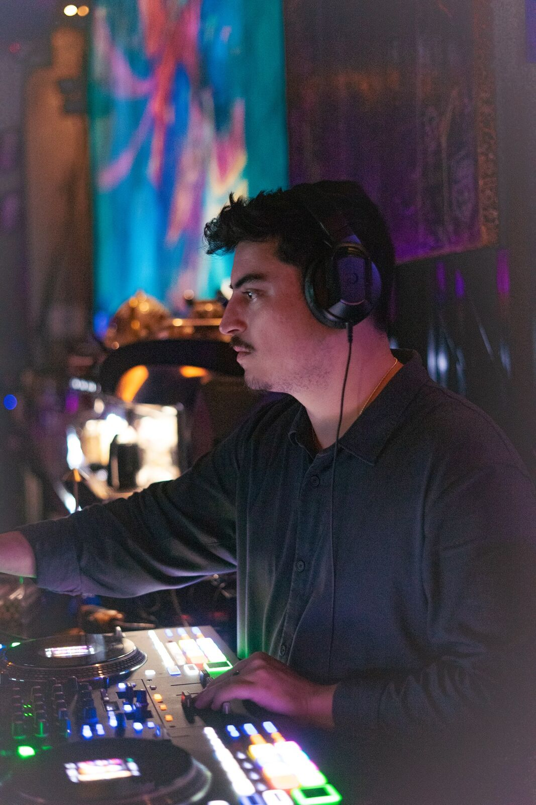

OTEO (Alec Pontes) — Orlando Weekly Best Club DJ nominee, a summer residency at Debonair Supperclub, and years of residencies across Orlando’s rooms. Bilingual on the mic (Portuguese & English). The track record behind the booking — bring the sound to your own room.
Every Wednesday

On the floor
Current Residency
Debonair Supperclub
Every Wednesday · select nights
OTEO's summer residency — every Wednesday, with select additional nights.